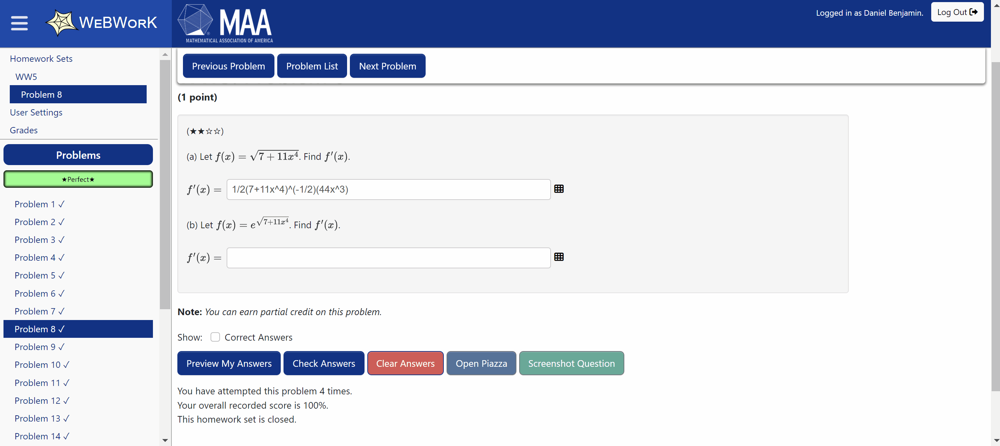

01 · Starting with real-time preview
The first version added a live, formatted mathematical preview while students typed. It made long expressions easier to read and gave immediate confidence that WeBWorK would interpret an answer as intended.
A continuously improving browser extension that makes WeBWorK faster, clearer, and less error-prone—with live answer previews, input safeguards, better study tools, and hundreds of weekly users.
WeBWorK is widely used for university math and science courses, but completing an assignment can involve a lot of unnecessary friction. Long expressions are difficult to inspect in fixed-size inputs, formatting mistakes can consume limited attempts, and useful actions—previewing an answer, finding learning resources, or saving a question for later—take more effort than they should.
I built WeBWorKer to remove that friction without changing the underlying platform. The extension adds focused improvements directly to the existing WeBWorK interface, helping students spend less time fighting the page and more time solving the problem.
I did not want to build features based only on my own assumptions. I asked friends and people already using the extension what frustrated them most about WeBWorK, watched for recurring complaints, and turned those problems into concrete improvements.
When someone reports an issue or suggests a change, I verify it against their workflow and ship a focused update quickly. The examples below show how that process shaped the extension.

WeBWorKer started with one focused improvement and grew as real usage exposed the next most valuable problem to solve.
The first version added a live, formatted mathematical preview while students typed. It made long expressions easier to read and gave immediate confidence that WeBWorK would interpret an answer as intended.
Conversations with users revealed a recurring frustration: a missing or mismatched parenthesis could make a correct approach count as a wrong answer—and sometimes consume a limited attempt. I responded by building a visual parentheses checker that shows whether brackets are balanced and helps locate the mistake before submission.
I noticed a pattern in Piazza posts: many students did not realize a question had limited attempts until after they had submitted an answer. I added a confirmation window for those questions that clearly surfaces the restriction before submission, giving students a deliberate chance to review their work instead of losing an attempt unexpectedly.
Continued use also surfaced issues beyond answer entry. For example, solution PDFs were often broken or awkward to access, so I added an inline PDF viewer with an Open in New Tab option. Similar observations led to smaller workflow improvements such as resizable inputs and tools for saving or researching questions.
The extension grew through students sharing it with one another and now serves hundreds of people each week, reaching a recorded peak of 920 weekly users.
What began as a live-preview utility became a product used well beyond my immediate circle. I continue to maintain it as WeBWorK changes, prioritizing improvements that remove genuine obstacles without adding unnecessary complexity.